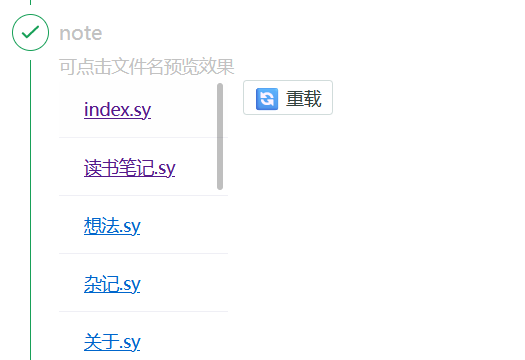

OceanPress更新日志
v1.0.42 OceanPress支持侧边文档树目录导航
v0.0.10
支持预览功能，依赖于 hono 优秀的多平台运行能力，我将 OceanPress cli程序的 运行代理站点 功能移植到了 web ui界面，
现在 web ui 可以在编译之前点击相关文档预览编译之后的效果了。

web ui 预览列表界面
 运行效果
运行效果
运行效果下一步我将开始完善 OceanPress 思源插件，将web ui内置到插件之中。
诸位新年快乐🎉
v0.0.9
支持 meilisearch issues/5
v0.0.8
preview.10
💥重磅更新：为挂件生成快照
更完善的增量编译功能
在文档 a 引用文档 b 的情况下
b发生变化也会触发a文档的编译
对挂件生成快照，至少能看见预览效果(需要安装插件，只是能看...)
渲染嵌入块中的标题块后面的非标题块
fix 任意元素上悬停都显示文档标题